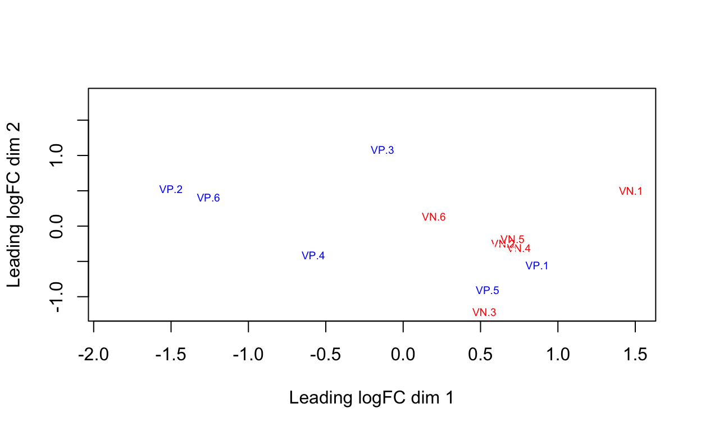

library(edgeR)
library(ggplot2)
library(GGally)
library(EDASeq)
library(utils)
beeCounts <-read.delim(file="../AllLaneCount.txt",row.names=1,stringsAsFactors = FALSE)
colnames(beeCounts) <- c("NC.1", "NC.2", "NR.1", "VR.1", "NN.1", "VP.1", "NN.2", "VR.2", "NP.1", "VP.2", "VC.1", "NP.2", "VP.3", "NP.3", "VN.1", "VN.2", "VC.2", "NC.3", "VP.4", "NC.4", "NR.2", "VC.3", "VC.4", "NP.4", "VR.3", "NC.5", "VN.3", "NP.5", "VC.5", "VN.4", "NN.3", "VN.5", "VP.5", "NR.3", "NR.4", "VC.6", "NN.4", "NC.6", "NP.6", "VR.4", "NR.5", "NR.6", "NN.5", "VP.6", "NN.6", "VR.5", "VR.6", "VN.6")
beeCounts <- beeCounts[ , order(names(beeCounts))]
y <- DGEList(counts=beeCounts)edgeR vignette states that a gene is required to have a count of 5-10 in a library to be considered expressed in that library. Here minLib is equal to 3.04425910^{6}. A CPM of 3 corresponds to a count of ~9 in the minimum number of samples in a group (24). So, I keep only rows that have that. This reduces the number of genes from 15,314 to 8,581.
minLib <- min(y$samples$lib.size)
keep <- rowSums(cpm(y)>3) >= 24
# Number of genes 15,314--> 8,581
y <- y[keep, , keep.lib.sizes=FALSE]Next, I used edgeR normalization.
yERN <- calcNormFactors(y)The boxplot has many outliers, and I cannot see any boxes.
ggparcoord(data.frame(yERN[[1]]), columns=1:48, alphaLines=0, boxplot=TRUE, scale="globalminmax") + coord_flip()I can create MDS plots of interest.
allGroups <- c(rep("NC",6), rep("NN",6), rep("NP",6), rep("NR",6), rep("VC",6), rep("VN",6), rep("VP",6), rep("VR",6))
yERN$samples$group <- allGroups
plotMDS(y, col = c("red","deeppink","darkorange","gold","green2", "green4","blue", "purple")[factor(allGroups)], cex=0.6)plotMDS(y, col = c("blue","blue","blue","blue","red","red","red","red")[factor(allGroups)], cex=0.6)plotMDS(y, col = c("white","red","blue","white","white","white","white","white")[factor(allGroups)], cex=0.6)
plotMDS(y, col = c("white","white","white","white","white","red","blue","white")[factor(allGroups)], cex=0.6)
plotMDS(y, col = c("white","white","blue","white","white","red","white","white")[factor(allGroups)], cex=0.6)